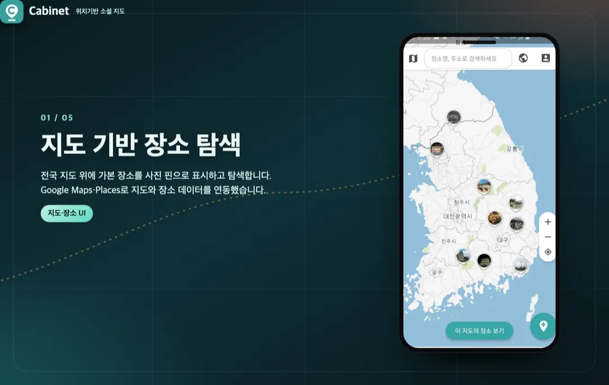
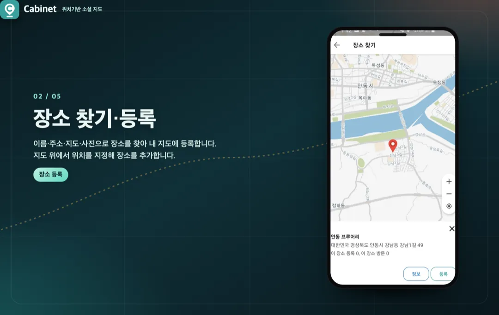
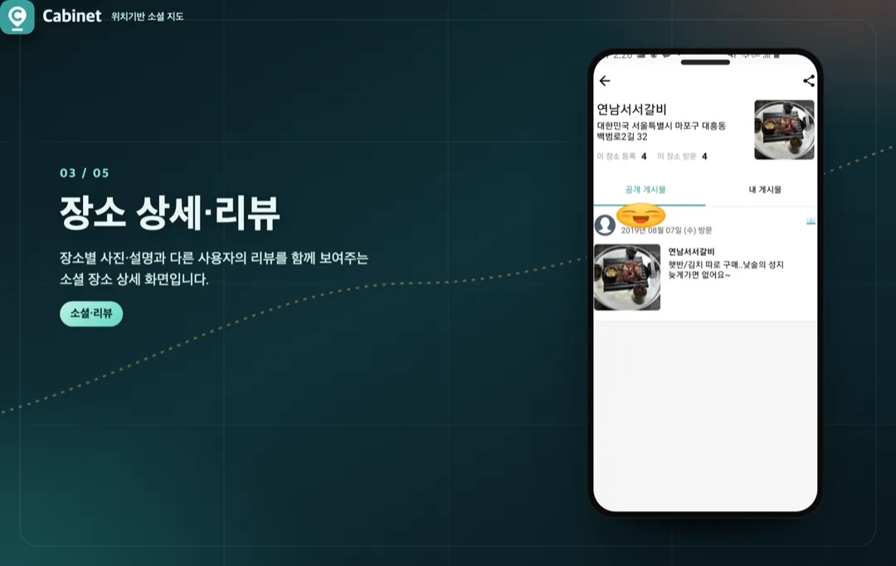
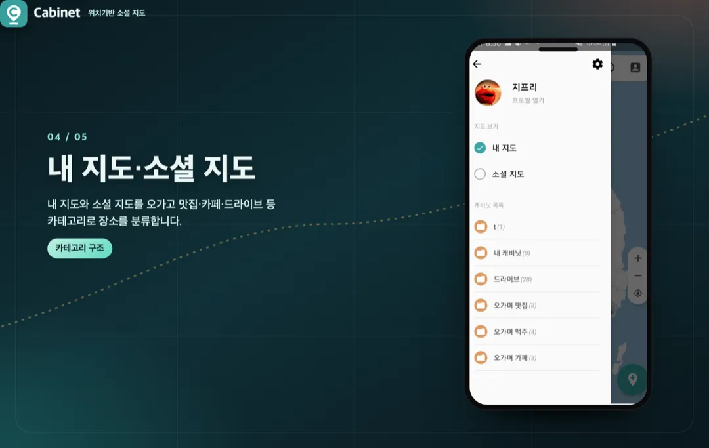
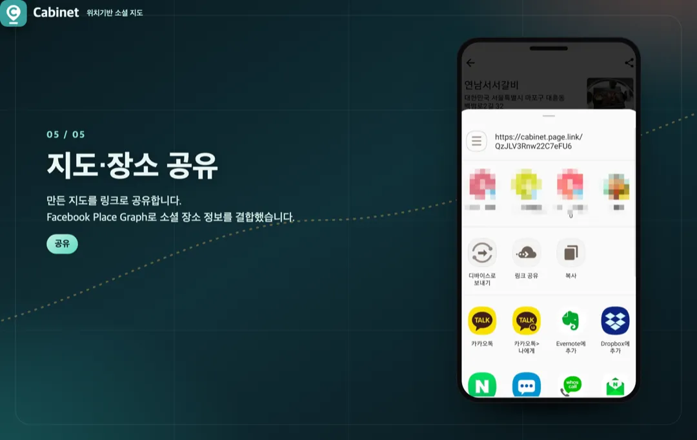

앱 개발
위치기반 소셜 지도 앱 Cabinet iOS·Android 개발 및 운영
참여 기간 · 2017.02 ~ 2018.01





포트폴리오 소개
- 기억하고 공유하고 싶은 장소를 지도에 콘텐츠로 등록하고 전 세계 사용자와 소통하는 iOS·Android 소셜 지도 앱 'Cabinet'을 개발·출시하고 운영·유지보수한 프로젝트입니다.
- Google Maps로 지도를, Google Places API로 장소 데이터를 연동하고, Facebook Place Graph로 소셜 장소 정보를 결합해 지도 위에서 장소를 탐색·공유하도록 구현했습니다.
- 장소·사용자 데이터는 SQLite로 로컬에 저장·관리했습니다.
작업 범위 (제가 담당한 부분)
- iOS·Android 앱 개발 전반
- Google Maps·Places API 연동 (지도·장소 데이터)
- Facebook Place Graph 연동 (소셜 장소 정보)
- SQLite 기반 로컬 데이터 저장·관리
- 스토어 출시·운영·유지보수
주요 업무 및 기능
- 지도 기반 장소 탐색·공유 UI
- Google Places API로 장소 검색·상세 데이터 연동
- Facebook Place Graph로 소셜 장소 정보 결합
- SQLite 로컬 저장으로 반복 조회 최소화
- iOS·Android 동시 개발 및 스토어 배포
주안점
- 지도 렌더링과 장소 탐색의 성능
- 여러 장소 데이터 소스(Google·Facebook)의 결합·정합성
- 로컬 저장을 통한 조회 효율과 안정적 운영
문제점
- 기억하고 공유하고 싶은 장소를 지도에 기록하고 다른 사용자와 나눌 공간이 마땅치 않았습니다.
- 장소 정보가 여러 소스(지도·소셜)에 흩어져 있어 한 화면에서 보기 어려웠습니다.
- 반복적인 장소 조회는 네트워크 비용과 지연을 키웠습니다.
프로젝트 목표
- 가본 장소를 지도에 콘텐츠로 기록하고 전 세계 사용자와 소통하는 앱을 iOS·Android로 개발·출시.
- Google Maps·Places와 Facebook Place Graph를 결합해 장소 정보를 한 화면에 제공.
- SQLite 로컬 저장으로 조회 효율과 안정성 확보.
주안점
- 지도 렌더링·장소 탐색 성능.
- 다중 장소 데이터 소스의 결합과 정합성.
- 로컬 저장 기반 조회 최적화와 안정적 운영.
프로젝트 성과
iOS·Android 소셜 지도 앱 개발·출시
iOS와 Android용 위치기반 소셜 지도 앱을 개발해 양쪽 스토어에 출시하고 운영·유지보수까지 담당했습니다.
다중 장소 데이터 소스 결합
Google Maps·Places API와 Facebook Place Graph를 결합해 지도 위에서 장소를 탐색·공유할 수 있도록 구현했습니다.
로컬 저장 기반 안정적 운영
SQLite 로컬 저장으로 장소 데이터를 관리해 반복 조회를 줄이고 출시 이후 운영·유지보수를 이어갔습니다.
비슷한 프로젝트를 계획 중이신가요? 아이디어 단계여도 괜찮습니다.
프로젝트 문의하기 →